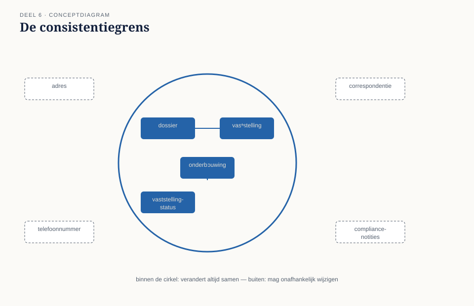
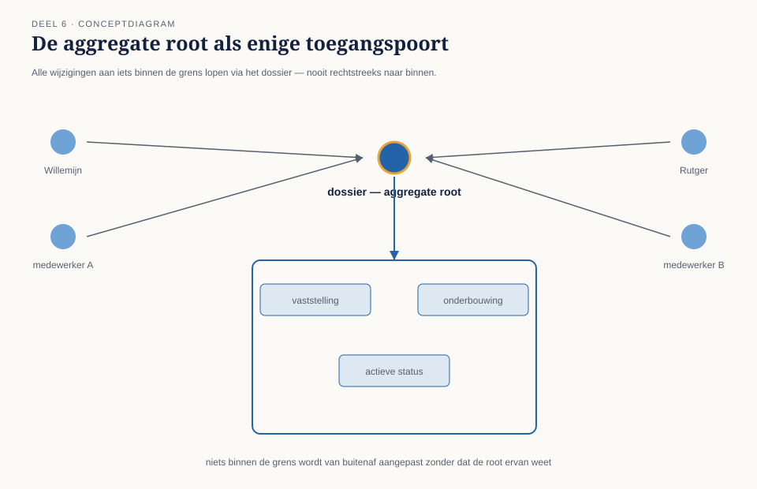
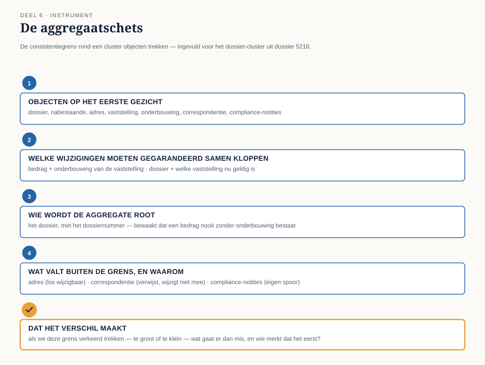

Cursus Domain-Driven Design · Niveau 1 (fundament) · Deel 6 van 30
De consistentiegrens
Twee medewerkers werken tegelijk aan hetzelfde dossier — en het dossier klopt er niet meer bij. Niemand deed iets fout, maar twee entity's die apart werden opgeslagen liepen uit de pas. Dit deel leert het team de derde tactische bouwsteen: het aggregate, de grens waarbinnen alles gegarandeerd samen moet kloppen.
7secties
±1uleestijd + opdrachten
6controlevragen
4vragen aggregaatschets
Positionering. Deze cursus bereidt voor op de iSAQB® Advanced Level-module Domain-Driven Design en is uitdrukkelijk geen vervanging van een erkende iSAQB-training — zij levert op zichzelf geen certificaat op. Alle formuleringen, figuren en werkvormen zijn van Ductus; waar wij naar begrippen van Eric Evans en Vaughn Vernon verwijzen, doen wij dat in eigen woorden en eigen voorbeelden. Studeer voor de module altijd óók bij een erkende provider.
Niveau 1: ➊ Wat DDD is → ➋ Ubiquitous language → ➌ Domain/subdomain → ➍ Model vs. implementatie → ➎ Entity/value object → ➏ Aggregate (hier) → ➐ Domain event → ➑ Services/factory/repository → ➒ Bounded context → ➓ Examentraining + capstone
01
Waar dit deel over gaat
⏱ 5 min
Deel 5 heeft het team twee soorten objecten opgeleverd: entity's met een eigen identiteit (de nabestaande, de partnervaststelling) en value objects die volledig door hun inhoud worden bepaald (het adres, het bedrag). Tijmen sloot af met een vraag die nog geen antwoord had: als de vaststelling wijzigt, moet dan ook automatisch het dossier worden bijgewerkt? En wat gebeurt er als twee mensen tegelijk aan hetzelfde dossier werken? Dit deel geeft daar een antwoord op, met de derde tactische bouwsteen: het aggregate.
Aan het eind van dit deel kun je:
in eigen woorden uitleggen wat een aggregate is en waarom het draait om consistentie, niet om structuur;
voor een cluster objecten bepalen welke wijzigingen altijd in één keer moeten kloppen, en welke niet;
de rol van de aggregate root benoemen en uitleggen waarom niet elke entity die rol kan vervullen;
met de aggregaatschets een consistentiegrens rond een cluster objecten trekken en verdedigen.
02
De casus: twee medewerkers, één dossier
⏱ 11 min
Corné Pauwels vertelt een incident: twee medewerkers van Nabestaandenzaken werkten, zonder van elkaar te weten, tegelijk aan hetzelfde dossier — de een verwerkte een adreswijziging, de ander verwerkte op hetzelfde moment een compliance-check van Saïda die het bedrag bijstelde. Beide wijzigingen werden apart opgeslagen. Het resultaat: het dossier kreeg een nieuw adres, mét het oude bedrag, omdat de tweede wijziging de eerste per ongeluk overschreef.
"Niemand deed iets fout," zegt Corné. "Ze werkten allebei gewoon hun eigen taak af. Maar het dossier klopte er niet meer bij."
Daan denkt hardop na: "In deel 5 hebben we de vaststelling en het dossier allebei als entity aangewezen. Als dat twee losse dingen zijn die allebei apart worden opgeslagen, dan kan precies dit gebeuren."
"Dus moeten we ze samenvoegen tot één ding?" vraagt Rutger.
"Niet alles," zegt Tijmen. "Als we van elk dossier en alles wat erbij hoort één groot, onwrikbaar geheel maken dat je alleen als geheel kunt wijzigen, dan kan straks niemand meer iets aanpassen zonder het hele dossier te claimen. Dat lost het ene probleem op en maakt een nieuw probleem."
Saïda stelt de vraag die het hart van dit deel wordt: "De vraag is niet 'wat hoort er allemaal bij het dossier'. De vraag is: welke dingen moeten, op het moment dat er iets verandert, altíjd tegelijk kloppen — en welke dingen mogen best een paar uur uit de pas lopen zonder dat het een probleem is? Het bedrag van de vaststelling en de reden waarom het is vastgesteld — die twee moeten nooit los van elkaar bestaan. Maar het adres van de nabestaande en het bedrag van de uitkering hebben strikt genomen niets met elkaar te maken."
03
Wat een aggregate is
⏱ 14 min
Een aggregate is een cluster van entity's en value objects die het domein als één geheel behandelt wanneer het om consistentie gaat: alles binnen die grens verandert samen, in één keer, of helemaal niet. Het is geen technisch groeperingsmechanisme en geen willekeurige verzameling "dingen die logisch bij elkaar horen" — het is een bewuste keuze over welke wijzigingen altijd tegelijk moeten kloppen.
Zodra twee stukjes informatie apart worden opgeslagen en apart gewijzigd, ontstaat het risico dat ze op enig moment niet meer bij elkaar passen. Een aggregate is de grens waarbinnen het domein zegt: dit risico accepteren we hier niet.

Figuur 6-1 — binnen de grens verandert alles samen; daarbuiten mag het los
De aggregate root
Een aggregate heeft altijd precies één entity die als toegangspoort fungeert: de aggregate root. Alle wijzigingen aan iets binnen de grens lopen via deze root. Dat is precies het mechanisme dat de consistentiegarantie waarmaakt: als alle wijzigingen via één poort lopen, kan die poort controleren of de wijziging het geheel niet in een ongeldige toestand brengt, vóórdat de wijziging wordt doorgevoerd.
Bij het Nabestaandenloket ligt het voor de hand dat het dossier zelf die rol vervult: het heeft het dossiernummer waarmee iedereen ernaar verwijst, en het is het niveau waarop de regel geldt dat een bedrag nooit zonder onderbouwing mag bestaan.

Figuur 6-2 — de aggregate root als enige toegangspoort tot het cluster
Controlevragen
Uit Werkboek deel 6, Opdracht 1 — wat ging er mis?
1Wat is er in het incident van 09:14–09:41 precies gebeurd, in termen van deel 5 (entity/value object)?Toon antwoord
Het adres (value object, gekoppeld aan de nabestaande) en het bedrag van de partnervaststelling (onderdeel van de vaststelling-entity) werden onafhankelijk van elkaar gewijzigd en onafhankelijk opgeslagen. Omdat de opslag het volledige dossierrecord overschreef in plaats van alleen het gewijzigde onderdeel, ging de eerste wijziging (het adres) verloren toen de tweede wijziging (het bedrag) werd opgeslagen.
2Zou dit incident zijn voorkomen als adres en bedrag binnen dezelfde aggregate hadden gezeten?Toon antwoord
Nee — sterker nog, het incident toont juist aan dat adres en bedrag niets met elkaar te maken hebben en dus geen reden hebben om binnen dezelfde consistentiegrens te zitten. Het probleem zat niet in het onafhankelijk wijzigen (dat mág), maar in de technische opslag die geen onderscheid maakte tussen twee onafhankelijke wijzigingen en één wijziging die de andere overschrijft. Een correct ontworpen aggregate had dit voorkomen doordat opslag per aggregate plaatsvindt, niet per volledig dossierrecord.
04
Waar de grens wél en niet loopt
⏱ 14 min
De vraag van Saïda — "welke dingen moeten altijd tegelijk kloppen, en welke mogen uit de pas lopen" — is de enige vraag die er werkelijk toe doet. Twee denkfouten liggen op de loer, spiegelbeelden van elkaar.
Te groot: alles bij elkaar vegen wat "erbij hoort". Het dossier, de vaststelling, alle correspondentie, alle compliance-notities — dat voelt allemaal alsof het bij hetzelfde dossier hoort. Het gevolg: niemand kan meer iets kleins wijzigen zonder het hele, opgeblazen geheel te claimen. Twee medewerkers die allebei iets anders willen doen, moeten dan op elkaar wachten, ook al hebben hun wijzigingen niets met elkaar te maken.
Te klein: alles los van elkaar laten, zonder garantie. Dit is precies het incident van Corné: de vaststelling en haar onderbouwing worden als twee volledig losse dingen behandeld, en niemand bewaakt dat ze bij elkaar blijven passen.
Figuur 6-3 — te groot, te klein, en de juiste grens
De juiste grens ligt ertussenin, bepaald door: welke wijziging moet, om geldig te zijn, een andere wijziging gegarandeerd meenemen? Het bedrag zonder de reden is voor Saïda ongeldig — die twee horen binnen dezelfde grens. Het adres en het bedrag hebben geen zo'n afhankelijkheid — die mogen apart wijzigen.
Waarom kleine aggregates de voorkeur verdienen
Vuistregel: kies, bij twijfel, de kleinere aggregate. Iedere entity die je toevoegt is een entity die niet meer onafhankelijk kan worden gewijzigd. Bij een klein team met veel gelijktijdig werk is dat een reële kostenpost.
Controlevraag
Uit Werkboek deel 6, Opdracht 2 — weerleg Rutgers eerste voorstel
1Rutger stelt voor om alles — dossier, correspondentie, compliance-notities — in één grote aggregate onder te brengen. Welke twee concrete problemen ontstaan daardoor bij Nabestaandenzaken?Toon antwoord
(1) Elke wijziging moet via die ene root lopen: twee medewerkers die onafhankelijk iets willen doen — de een een brief versturen, de ander een adreswijziging verwerken — kunnen dat niet meer tegelijk, ook al hebben hun taken niets met elkaar te maken. (2) Saïda's compliance-notities zouden binnen dezelfde aggregate vallen als alle operationele wijzigingen: zij moet dan wachten tot niemand anders iets aan het dossier doet, en omgekeerd blokkeert zij het team elke keer dat ze documenteert — dat ondermijnt precies de onafhankelijkheid die haar rol vereist.
05
De werkvorm: de aggregaatschets
⏱ 14 min
Het instrument van dit deel is de aggregaatschets: een sjabloon waarmee je, voor een cluster objecten, bepaalt waar de consistentiegrens loopt, wie de root is, en wat er buiten de grens valt.
Vraag
Waar het op let
Welke objecten horen op het eerste gezicht bij elkaar?
Begin breed: som alle entity's en value objects op, zonder nog te selecteren.
Welke wijzigingen moeten gegarandeerd samen kloppen?
Ga elk paar objecten langs met Saïda's vraag: wordt het domein ongeldig als het ene wijzigt zonder het andere?
Wie wordt de aggregate root?
Welke entity vertegenwoordigt de identiteit van het geheel en bewaakt de regels erover?
Wat valt buiten de grens, en waarom mag dat?
Welke twee wijzigingen mogen onafhankelijk van elkaar plaatsvinden?

Figuur 6-4 — de aggregaatschets, ingevuld voor het dossier-cluster
Controlevraag
Uit Werkboek deel 6, Opdracht 3 — wie wordt de root?
1Waarom is de partnervaststelling zelf minder geschikt als aggregate root dan het dossier?Toon antwoord
De partnervaststelling wordt bij elke herberekening een nieuwe entity (deel 5). Als de vaststelling de root zou zijn, zou er bij elke herberekening een nieuwe root ontstaan, en zou er geen stabiele identiteit meer zijn om de opeenvolgende vaststellingen aan op te hangen. Concreet: bij een bezwaar zou Saïda dan niet meer kunnen navragen "toon mij alle vaststellingen die ooit bij dit dossier hoorden" — elke vaststelling zou op zichzelf staan, zonder verbindende root.
06
Het veld dat het verschil maakt
⏱ 8 min
Onder de vier vragen staat het afsluitende veld:
Het vijfde veld
Dat het verschil maakt: als we deze grens verkeerd trekken — te groot of te klein — wat gaat er dan mis, en wie merkt dat als eerste?
"Het dossier is de aggregate" is een constatering; "als we de correspondentie binnen dezelfde aggregate als het dossier plaatsen, kunnen Willemijn en een collega niet meer tegelijk aan hetzelfde dossier werken als de een een brief verstuurt en de ander een adreswijziging verwerkt — Willemijn is degene die dat als eerste merkt, op het moment dat haar wijziging wordt geweigerd" is een inzicht dat de grens verdedigbaar maakt.
07
Terug naar de casus
⏱ 13 min
Het team past de aggregaatschets toe op het cluster rond dossier 5216. Bedrag en onderbouwing van de vaststelling: gegarandeerd samen. Het dossier en welke vaststelling geldig is: ook gegarandeerd samen — twee tegelijk "actieve" vaststellingen zou intern tegenstrijdig zijn. Adres en bedrag: geen enkele afhankelijkheid. De correspondentie levert discussie op: een verstuurde brief mag nooit los staan van de vaststelling waarover hij gaat, maar het versturen zelf hoeft niet te wachten op een gelijktijdige adreswijziging. Het team besluit: de correspondentie verwijst naar een vaststelling op het moment van versturen, en blijft daarna een geldig historisch feit, ook als de vaststelling later wijzigt.
Root: het dossier, met als identificerend kenmerk het dossiernummer. De nabestaande wordt overwogen maar verworpen: zij kan in theorie bij meer dan één dossier betrokken zijn, terwijl het dossier altijd één, ondubbelzinnige consistentiegrens vertegenwoordigt.
Bij het afsluitende veld schrijft Corné: "Als we de correspondentie binnen dezelfde aggregate als het dossier hadden gestopt, was precies mijn incident opnieuw mogelijk geweest, maar dan andersom: een medewerker die een brief wil versturen, moet dan wachten tot een collega klaar is met een adreswijziging aan hetzelfde dossier. Willemijn is dan degene die als eerste tegen die wachttijd aanloopt."
Rutger formuleert de conclusie die voor hem het scherpst blijft hangen: "Ik dacht dat het aggregate ging over wat bij elkaar hoort. Het gaat over wat nooit uit elkaar mag vallen. Dat zijn twee heel verschillende vragen, en de tweede is veel kleiner dan de eerste."
Samenvatting
Een aggregate is een consistentiegrens: alles erbinnen verandert samen of niet, gebaseerd op wat werkelijk gegarandeerd moet kloppen.
De aggregate root is de enige toegangspoort; alle wijzigingen lopen erlangs.
Te groot maakt het systeem onbruikbaar traag voor onafhankelijke wijzigingen; te klein laat inconsistenties ontstaan.
Bij twijfel: kies de kleinere aggregate.
Vooruit naar deel 7
Tijmen sluit af: "We hebben nu vastgesteld dat een bedrag nooit zonder onderbouwing mag ontstaan. Maar we hebben nog niet vastgelegd wát er precies is gebeurd — dat een vaststelling is gedaan, met dat bedrag, op die datum, om die reden — als een onveranderlijk feit dat we later kunnen naslaan." Hoe leg je vast wát er is gebeurd, op een manier die nooit meer wordt overschreven? Dat is het domain event, de vierde tactische bouwsteen, het onderwerp van deel 7.
Controlevraag
Uit Werkboek deel 6, Opdracht 6 — waarom de root altijd een entity is
1Kan een aggregate uitsluitend uit value objects bestaan, zonder één entity als root? Waarom (niet)?Toon antwoord
Nee. De root is de identiteit waarmee de buitenwereld het geheel aanspreekt en waaraan alle wijzigingen worden getoetst — value objects hebben per definitie geen eigen identiteit en kunnen dus niet die aanspreekbare, blijvende rol vervullen. Zonder een entity als anker zou er niets zijn dat "hetzelfde aggregate van gisteren" blijft als de inhoud wijzigt, en daarmee zou het hele idee van een consistentiegrens die door de tijd heen bewaakt wordt, wegvallen.
Verder naar deel 7
Het team heeft vastgesteld dat een bedrag nooit zonder onderbouwing mag ontstaan. Maar het heeft nog niet vastgelegd wát er precies is gebeurd — dat een vaststelling is gedaan, met dat bedrag, op die datum, om die reden — als een onveranderlijk feit dat later kan worden nageslagen. Dat is de vierde tactische bouwsteen: het domain event, het onderwerp van deel 7.